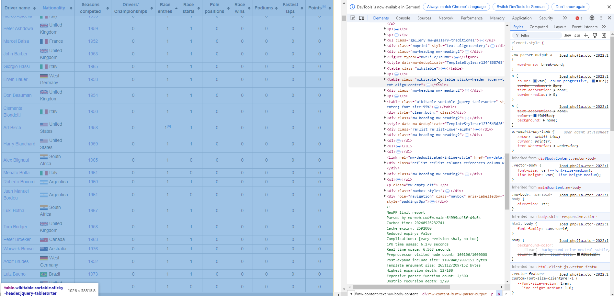

Data Sources
Databases
As with API’s a real connection to a remote database is right now not feasible using webR. But we can use duckDB which is a fast in-process analytical database. It has one more advantage: It is locally hosted, which means it is a physical file on your machine. We also use dbplyr which is a database backend that uses the same or similar logic as dplyr for data manipulation with remote data sources.
So did it work? You can query the object using the same commands as described above. Another way is of course to plot it, but that is hard when we do not know what variables are in the dataset. Sometimes in those cases, the R base plotting is an excellent way of doing some quick E(xplorative)D(ata)A(nalysis)
Web scraping
In this example we will scrape the F1 driver data from wikipedia, that is online here. The large table contains a lot of data that we want to download. Again, we can not access the data from webR, that why we need to fake it a little, but the general idea on how to access a page online can be seen below.
library(rvest)
link <- "https://en.wikipedia.org/wiki/List_of_Formula_One_drivers"
page <- read_html(link)We take it interactively from here. First, we read in the html file. Above this, you can see how that would work using an url. The file has been downloaded to the VFS, but we can use the same command!
Next, we need to find the right table. Navigate to wikipedia page and look for it. The easiest way to do this, is by right-clicking on the page and choosing inspect. You should see something like this.

The table is in an table element with the sortable attribute. The rvest package allow for functions that are prepared for this, so we just need to convert the raw page. You may have notices the clean_names() function. This comes from the janitor package, which contains very useful functions for data cleaning. It has been uploaded to your webR already, but check out the github link. Try to alter the code to see the effect of the packagel, you have all the tools available.
Next, we are going to do some data cleaning. We only want to keep certain columns. To achieve this, we use the select() function from dplyr.
Also, please check out the last row of the dataframe. It appears that this is no data but an explanation of the columns. This would prevent using the data out-of-the-box. But we do not need it anyway, so we get rid of it. Check out the nrow() command by typing ?nrow to see what it does.
In the next step, we need to check out the column drivers_championship. Apparently, in the table are the number of championships the drivers one, but also the years. We are (for now) only interested in the number of won championships, so we get rid of the years information by simply extracting the first character using the substr() function. This is achieved by also using the mutate() command provided by dplyr, you can find more detailed references here.
The next step is there for safety reasons. We make sure with the parse_number() function from the readr package, that all numbers in the columns of interest are actual numbers.
This was a step by step intro, you could also use one long chain of command as outlined below.
drivers_F1 <- drivers_F1 |>
select(
driver_name,
nationality,
seasons_competed,
drivers_championships,
pole_positions,
race_wins,
podiums
) |>
slice_head(
n = nrow(drivers_F1)-1
) |>
mutate(
drivers_championships = parse_number(substr(drivers_championships,start = 1, stop = 1)),
race_wins = parse_number(race_wins),
pole_positions = parse_number(pole_positions)
)So, what now? We can look into how many championships by nation have been won. For this, we first group_by() nation, and then we summarise() the sum of all drivers_championships.
The output is… nothing. We need to look into the created object.
But the order is alphabetically, we want to see the top nations!
Oh no, wrong again, we want to have it descending.
Ok, and who is the driver with the most won championships?
Next thing we want to know is, if there is a relationship between number of pole_positions and the number of championships that have been won by a driver (drivers_championsips).
So what happens in the code block? First we take the dataframe and filter it, so only driver_championships greater than 1 are retained. After that, we pipe it into ggplot2, a plotting system that is based on the Grammar of Graphics. Onto the x-axis we map the number of pole_positions and on the y-axis we map the number of driver_championships. This we plot with a geom_point(), so we tell the function to use points to represent the data. The position = jitter jitters the points and prevents overplotting. The labs() function assigns nice labels to the axis. The geom_smooth() function maps a linear regression line (including the standard error in light gray). In the end we can give the plot a nice theme with theme_minimal().